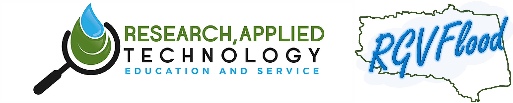
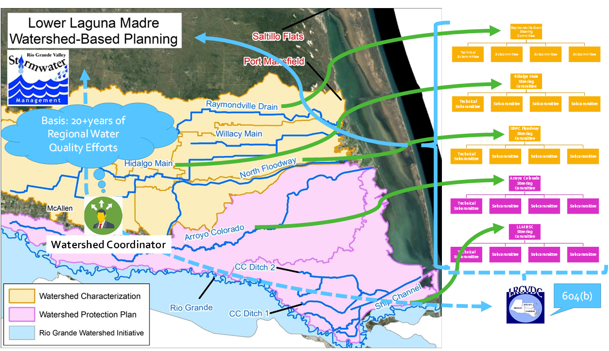
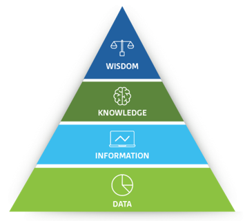
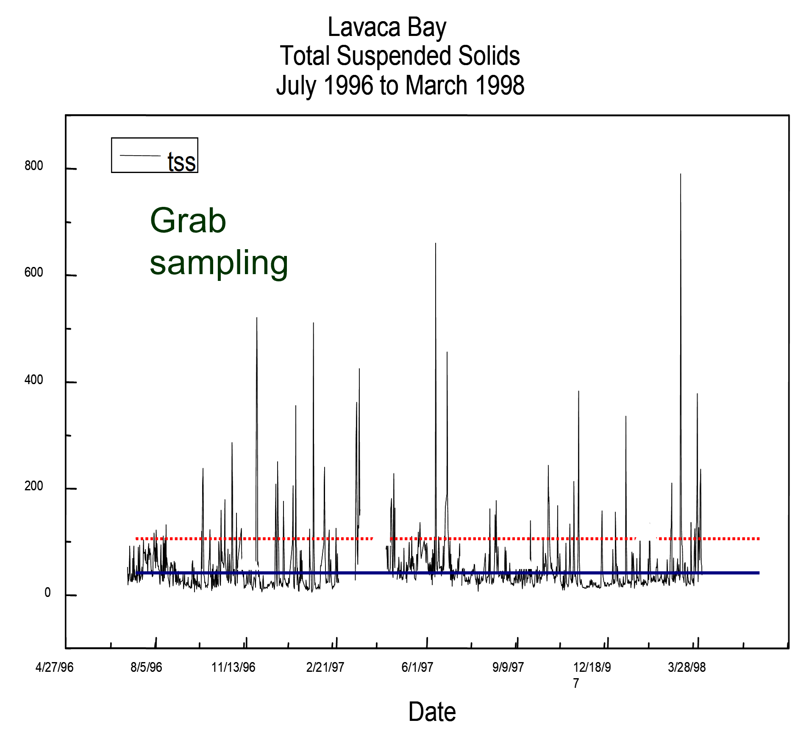

Regional Flood Management
{kind=link}
About RGVFlood
Regional Watershed Planning
Regional Water Resource Advisory Committee
Established January 30, 2019
Under LRGVDC Authority
15 Members
3 Counties, Large & Small Cities, Special Purpose Districts, Stormwater Taskforce, UTRGV, IBWC, Region M
Purpose
educate, promote, foster, and coordinate community and regional planning efforts on the environmental, economic, and other social impacts of existing, new or proposed regulations, policies, and control regarding water resources management
RATES Vision
Democratizing Water Intelligence for Knowledge-Enabled Policy & Decision Making
|  |
|
The Fable of the Six Blind Men and the Elephant
{kind=link}
The Case for a Common Operating Picture
What’s DIKW Got to Do with It?
{kind=link}
{kind=link}
Bridging Data to Decisions
{kind=link}
{kind=link}
Paradigm shift in Monitoring
|  |
99% of environmental change occurs on the order of 1% of the time |
The Need for Community Sensor Networks
Management Needs Data Outside Jurisdictional Boundaries
COTS Sensor Costs are Exorbitant
Sensor Placement Should Meet both LOCAL and REGIONAL Management Needs
LOCAL Control Promotes Effective Local Decision Making
Multi-Jurisdictional Sharing Promotes Regional Coordination